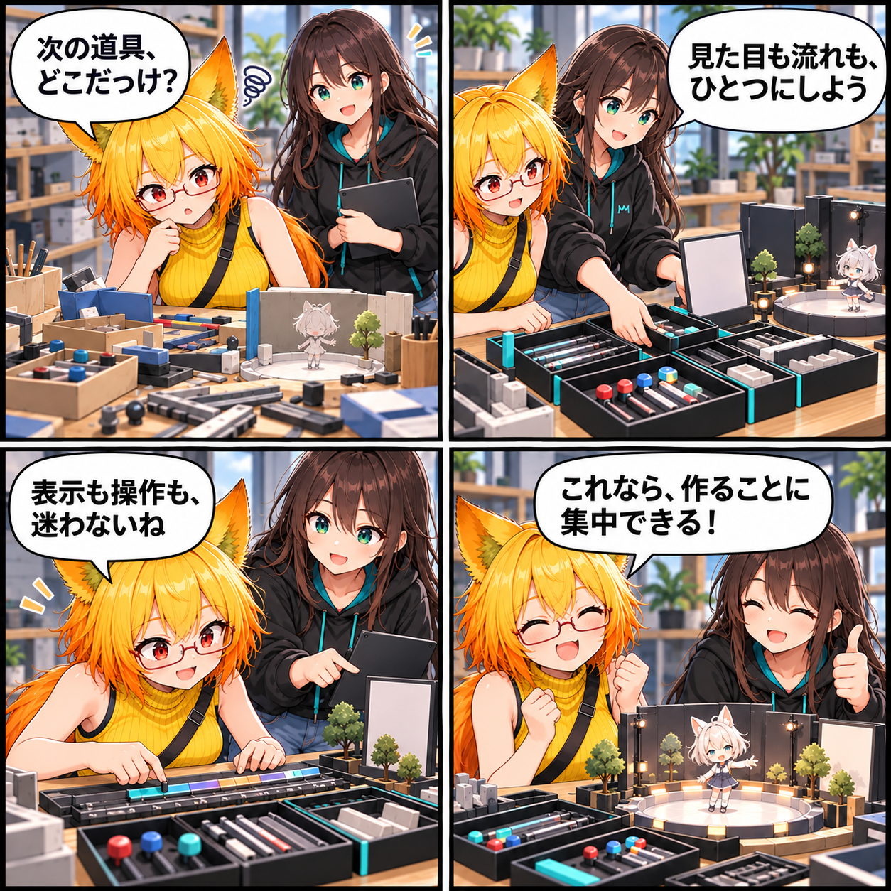

2026.11.01 / Development Log
VAC編集を、ひとつの道具として整える
VAC編集ワークスペースの見た目と操作の流れをそろえ、Canvas上の表示設定も同じ考え方で扱えるようにしました。
今回は development（開発進捗） です。集計期間は2026-10-31 03:00:00 JSTから2026-11-01 02:59:59 JSTまで、対象はViewerの
main です。集計終了時点のHEADは 698d4a82e9e5b63cbe5598ff16c31672c01148cb、期間内コミットは1件でした。未コミット差分は期間内に実装された事実を確定できないため、実績には含めていません。
作業の途中で迷わないために
VAC編集には、タイムライン、操作パネル、表示切り替えなど、作品を形にするための道具が集まっています。今回の変更では、それぞれが別の画面から来たように見えないよう、共通のテーマとレイアウトへ寄せました。必要な操作を探すより、編集そのものへ意識を向けやすくするための整理です。
操作と見た目を同じ場所でつなぐ
ワークスペースの組み立て、ガード処理、タイムライン、表示制御を見直し、編集状態に応じた案内と操作の置き方をそろえました。Canvasに何を表示するかという設定も、編集の流れから切り離さず扱えるようにしています。
あわせて、UIの配布状態を確認する仕組みと、UGUIのスモークチェックも更新しました。これは新しい演出を増やす変更ではなく、同じ編集作業を落ち着いて続けられる土台を整える作業です。
今回の範囲
対象はVAC編集UIのテーマ、操作性、Canvas表示設定です。ワークスペース構築、操作ガード、タイムライン、表示制御とUI確認を整えました。
4コマの話
今回は、いろいろな場所に散らばっていた制作道具を、二人で一つの編集机へ戻していく話にしました。派手な成功を急がず、「次に触るものが自然に見つかる」感覚を最後の小さな達成にしています。
まとめ
VAC編集を、機能が並ぶだけの場所ではなく、見た目と操作がつながった一つの道具として整えました。制作の途中で立ち止まる回数を減らし、作品づくりへ集中しやすくするための改善です。